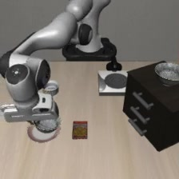
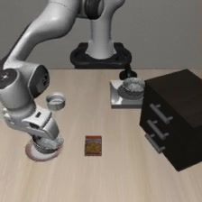
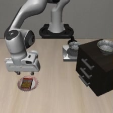
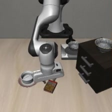
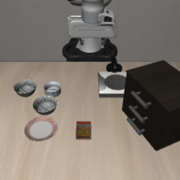

What “understanding the instruction” means, and how to test it
Change the words and watch what the robot does. This chapter turns that idea into the four tests in our plan, starting from our own first run of one of them.
Chapter 4 of 612 min readNeeds chapters 1 to 3
After this chapter you can
define language grounding by what the robot does
describe the four prompt conditions in our submitted plan and say what a high or low success rate means in each
explain why a test with a different task's sentence needs more than a success rate, and why a model might ignore the words
Two tasks in start from the same table. One black bowl sits on the stove and an identical one sits on top of the wooden cabinet. Task 7 says pick up the black bowl on the stove and place it on the plate, and task 9 says the same thing with on the wooden cabinet in place of on the stove. Chapter 3 found this pair in LIBERO's task files. The two files differ only in the sentence and in which of the two bowls starts where, so the picture can't say which bowl to take. Only the sentence can.
On 2026-11-11 we ran pi05_libero, the from chapter 2, on both tasks. Each task ran from ten of its stored starting arrangements, once with its own sentence and once with an empty string where the sentence goes. Everything else was the same, down to where each object stood. If the arm makes the same reach both times, grabs the same bowl and puts it on the same plate, the sentence wasn't what drove the motion.
Predict first
Figure 4.1 runs one of those starting arrangements both ways. On the left the robot gets task 9's sentence, and on the right it gets nothing. What will the arm on the right do?
Its own sentence
“pick up the black bowl on the wooden cabinet and place it on the plate”
An empty string
“” (nothing)
Figure 4.1 · One table, two sentences. Both runs start from the same arrangement, number 2 of the 50 LIBERO stores for task 9. With its sentence (left) the arm reaches up to the bowl on the cabinet and carries it to the plate. With an empty string (right) it takes the bowl on the stove, and the simulator scores the run a failure. We chose this pair because it shows the change plainly. Most blank runs didn't end like this, and figure 4.2 shows how they all ended. The pictures are the table camera exactly as the model received it, turned 180 degrees the way openpi's client does. The clip plays at the simulator's own pace of 20 steps a second, twice the speed we saved it at, and holds its last frame for a second. Recording: our run of openpi's pi05_libero checkpoint, 2026-11-11, LIBERO-Spatial task 9, starting arrangement 2. Clip made by tools/ch4/make_assets.py.
Across all the runs, the robot did the right task 19 times in 20 with its sentence. With an empty string it did the right task 8 times in 40. (The empty string ran from 20 starting arrangements per task: the ten used with the sentence, and ten more in which the checked more objects.) The motion changed when the words went away, so on this pair the words are doing real work.
A definition we can measure
We can't look inside the model and see “understanding”, so we define it by behaviour. An instruction is when changing the words changes what the robot does, in the way the new words say. When the words change and the behaviour doesn't, the model is running on the picture.
Our run passes the first half of that test and can't reach the second. Taking the words away changed what the robot did. But an empty string doesn't ask for anything, so there was no “way the new words say” for the robot to follow. Figure 4.2 shows what it did instead, in the 20 blank runs where the simulator also checked the cookie box.

The stove bowl on the plate
task 73
task 95

The cabinet bowl on the plate
task 70
task 91

The cookie box on the plate
task 72
task 91

None of the checked objects on the plate
task 75
task 93
one run the simulator scored a successone run it scored a failuretask 7 asks for the stove bowl, task 9 for the cabinet bowl
Figure 4.2 · How the 20 checked blank runs ended. Each column is one ending. Its picture comes from the first run that ended that way, at the moment the object reached the plate, or at the run's last frame in the last column. The robot took the stove bowl in both tasks, and that same move counts as a success for task 7 and a failure for task 9. In the last column neither bowl nor the cookie box reached the plate. The simulator didn't check the small ramekin, though, and in the run pictured, by our eye, the arm put the ramekin on the plate. Recording: our runs of openpi's pi05_libero checkpoint, 2026-11-11, starting arrangements 10 to 19 of each task; counts from stage1/runs/exp1-shared-table/episodes.jsonl. Frames chosen by rule in tools/ch4/make_assets.py.
In most blank runs no bowl reached the plate at all. Across all 40, a bowl got there 15 times, and 12 of those 15 times it was the bowl on the stove. We don't know yet why the robot prefers that one; one guess of ours is that the stove sits closer to where the arm starts. Every LIBERO-Spatial task ends with place it on the plate, and even without a sentence the robot kept moving things towards the plate, just not always the right thing.
There's a catch in reading figure 4.2. The model never saw an empty instruction in training, because every training example came with its task's sentence (prompt_from_task=True in the pi05_libero config). So part of what it shows may be the model reacting to an input it has never seen, on top of the missing information. A sentence for a different task, the last of the four conditions below, would separate the two.
The four conditions in our submitted plan
Our submitted plan runs the test from figure 4.1, and three more, on every task of LIBERO's four main suites. Each condition keeps the starting picture and changes only the sentence. Figure 4.3 shows the four sentences for LIBERO-Spatial's first task, whose recorded run chapter 2 stepped through, and what a high or a low success rate would mean for each. The success rate here is the share of that end with LIBERO's own check for this table's task met, the bowl between the plate and the ramekin on the plate.

1 · Original
“pick up the black bowl between the plate and the ramekin and place it on the plate”
Stays high
This is the baseline. It should match openpi's published 98.8 on LIBERO-Spatial.
Drops
Our setup has a problem, and we fix it before anything else.
2 · Paraphrase
“pick up the black bowl sitting between the ramekin and the plate and put it on the plate”
Stays high
The model copes with wording it never trained on.
Drops
It matches the exact training strings.
3 · Blank
“” (nothing)
Stays high
The picture alone was enough to choose the task.
Drops
The model needed the words.
4 · Different task, same table
“pick up the cookie box and place it on the plate”
Stays high
A warning sign. The robot did the table's usual task and ignored the new words.
Drops
It may be listening, or it may have stalled. The next section explains why that needs care.
Figure 4.3 · The four conditions on one table. The picture is the same in all four, and only the sentence changes. The different-task sentence is one the LIBERO-CF paper wrote for this same table (its CF-Spatial task 1). Picture: the first frame of our recorded run of LIBERO-Spatial task 0, as the model received it, 2026-11-11.
A different task needs more than a success rate
A common wrong belief
“When a different instruction makes the original task's success rate drop, the model must have followed the new words.”
A drop says only that the robot stopped doing the original task. It doesn't say what the robot did instead. It might have done the new task, or it might have frozen or flailed. Our blank run already shows a drop with nothing to follow. Success fell from 19 in 20 to 8 in 40, there were no new words at all, and in most of those runs no bowl reached the plate. So for this condition we need to record which task, if any, the robot actually completed.
The LIBERO-CF paper, which chapter 5 covers, wrote 50 instructions of this kind for LIBERO's tables. It calls each one a , a task the table allows but the model wasn't trained to do there. The paper uses three measures to score them, and we can reuse them. The is how often the gripper touches the object the new instruction names, whether or not the task gets finished. counts episodes where the robot completed the new task, and counts those where it did the table's original task instead. Figure 4.4 sorts the ways one episode can end into these measures.
sentence sent“pick up the cookie box and place it on the plate”
This table was built for task 0, the bowl between the plate and the ramekin. The sentence asks for the cookie box instead.
The cookie box ends on the plate.
grounding
faithful success
biased success
LIBERO's own score: failure
The gripper touches the cookie box, but nothing reaches the plate.
grounding
faithful success
biased success
LIBERO's own score: failure
The bowl between the plate and the ramekin ends on the plate, which is the table's usual task.
grounding
faithful success
biased success
LIBERO's own score: success
The gripper never touches the cookie box, and nothing reaches the plate.
grounding
faithful success
biased success
LIBERO's own score: failure
Figure 4.4 · Four ways one different-task episode can end, and what each one counts towards. The sentence is the LIBERO-CF paper's CF-Spatial task 1, sent on the table of LIBERO-Spatial task 0. Only the third ending counts as biased success, and it's also the only one that LIBERO's own check for this table scores as a success. So when that score drops, the cause could be the first, the second or the fourth ending, and only the first is the robot doing what it was told. Endings drawn by us; we haven't run this condition yet. Start picture: our recorded run of task 0, 2026-11-11. Sentence: LIBERO-CF's code, libero_cf_spatial task 01, built on task 0's starting arrangement.
The paper also counts how often the gripper touched the original task's object. Chapter 5 shows what it measured when it ran these 50 tasks on our checkpoint.
Go deeper
Different-task tests, in pictures and in code
Real robot · videos
π0.5 given a different task on a real arm
The LIBERO-CF project page shows videos of π0.5 on a real Franka arm, given instructions such as “pick up the fanta”, each beside the same robot with the paper's fix, which chapter 5 explains.
LIBERO-CF's code keeps a task file for each counterfactual instruction, built on an existing LIBERO table, and a list of the endings each task watches for, such as the cookie box, either bowl or the ramekin reaching the plate.
Our runner keeps openpi's settings, swaps in any sentence or an empty one, and records which objects reached the plate and when. The records of all 60 runs are in the repo.
The paraphrase condition needs care too. In LIBERO-Spatial the sentence picks a bowl by where it is, so a paraphrase must still point at the same bowl, or we've changed the task by accident. Figure 4.5 shows how easily that happens on task 0's table.
“pick up the black bowl sitting between the ramekin and the plate and put it on the plate”
The same bowl
This one is a paraphrase. It names the bowl the original names.
“pick up the black bowl next to the ramekin and place it on the plate”
The other bowl
This one is a different task. It's also word for word the sentence of LIBERO-Spatial task 1.
Figure 4.5 · Two rewordings of task 0's sentence. Both sound close to the original, pick up the black bowl between the plate and the ramekin. The left one still names the bowl between the two. The right one shortens the place to “next to the ramekin”, which is where task 0's file puts the second bowl. It is also another task's exact sentence, so the model has seen it in training, on task 1's table. Picture: the first frame of our recorded run of task 0, as the model received it, 2026-11-11. Where each bowl starts: LIBERO's task file for task 0.
A paraphrase that names the other bowl isn't testing wording any more. It has turned into the different-task condition, run without anyone meaning to.
Why a model might ignore the words
Chapter 1 gave the reason. Imitation learning, or , rewards whatever predicts the action in the . In three of the four LIBERO suites, the starting picture already predicts that action for almost every task, so the words add almost nothing during training. In LIBERO-Goal the words are the only thing that tells the tasks apart, so there the model has to use them. Chapter 3 shows the first picture of every task, and the two pairs of tasks that share one.
Our pair from figure 4.1 is one of those two exceptions, and it behaved the way this reasoning predicts. The picture can't choose between its two tasks, so the model needed the sentence, and without it the robot mostly failed. That says nothing yet about LIBERO-Spatial as a whole, where eight of the ten tasks start from a table of their own.
Predict first
Run every suite with a blank instruction. Which suite would lose the most, and which the least?
This gives a prediction we can check. It is our reading, not yet a result. A blank or wrong instruction should hurt little on Spatial, Object and LIBERO-10, and hurt a lot on Goal. If the model reads the words only where the data forced it to, then “does understand language?” has no single answer. It depends on what the data asked of it. Chapter 5 has the published blank-instruction numbers for our checkpoint, suite by suite.
What this means for our project
The question we submitted, “how does a VLA actually understand the instruction?”, becomes a set of numbers. They are the success rates under four conditions on four suites, plus which task the robot did under the wrong instruction. Our first run covered one condition on one pair of tasks. Its other half, giving each task the other task's sentence, would show whether the model follows the words or only reacts to losing them. Chapter 5 shows that other groups have already measured several of these numbers for the same checkpoint, which changes what is worth our time.
Check yourself
Define “grounded” in terms of what the robot does.
Show answer
Changing the words changes what the robot does, in the way the new words say.
Under a different-task instruction, the original task's success falls from 98% to 40%. What else do you need to measure before saying the model followed the new words?
Show answer
Which task the robot did in the other 60%. Did it complete the new task, touch the new object, or do nothing useful? The grounding rate and faithful versus biased success answer this.
Why does our reading predict that a blank instruction hurts most on LIBERO-Goal?
Show answer
Goal is the only suite where all ten tasks share one starting picture. Without words the model can't tell them apart, so it can only guess.
In figure 4.1 the empty string sent the arm to the other bowl. Why is this pair a good place to see the words matter, and why doesn't it tell us how LIBERO-Spatial behaves as a whole? Say it in your own words.
Show answer
Its two tasks start from the same table, so only the sentence can say which bowl to take, and the model can't succeed without reading it. In eight of Spatial's ten tasks the table alone identifies the task, so a blank instruction might change little there.
In questions 5 to 8, pick the answer you think is right. The option opens and says whether it's right and why, and you can open the others afterwards to see what's wrong with them.
We send task 0's table the sentence “pick up the cookie box and place it on the plate”, and task 0's success rate falls from 98% to 40%. What can we say about the other 60% of episodes?
The robot followed the new words in them, since it stopped doing the old task.
No, and this is the wrong belief the chapter warns about. Stopping the old task is all a drop shows. The robot may have done the new task, touched the cookie box and given up, or done nothing useful.
Nothing yet. We need to see what the robot did in them, for example with the grounding rate and faithful success.
Right. The grounding rate says whether it touched the cookie box, and faithful success whether it put the box on the plate. LIBERO's own check for task 0 can't tell either apart from a robot that froze.
The model ignores language, because it still did the old task 40% of the time.
No. The 40% does count against it, as biased success, but behaviour changed in the other 60%. Whether that change followed the words is the open part.
Which of these would work as a paraphrase of task 0's sentence, “pick up the black bowl between the plate and the ramekin and place it on the plate”?
“pick up the black bowl next to the ramekin and place it on the plate”
No. On task 0's table the second bowl starts next to the ramekin, so this names the other bowl. It's also the exact sentence of LIBERO-Spatial task 1.
“pick up a black bowl and place it on the plate”
No. There are two black bowls on the table and this doesn't say which one, so either would count as doing what it asks.
“put the black bowl that sits between the ramekin and the plate onto the plate”
Right. The words are different, and it still names the same bowl, so success still means the same thing.
On our shared-table pair, an empty string cut success from 19 in 20 to 8 in 40. Why doesn't that yet show the model follows the words in the way they say?
An empty string asks for nothing, so there was nothing for the robot to follow. Part of the drop may also be the model reacting to an input it never saw in training.
Right. The drop shows the words matter on this pair. Whether the robot does what new words say needs a sentence that asks for something else, such as the other task's sentence.
Because 8 in 40 is too close to 19 in 20 to tell apart.
No. Our results give 76–99% and 10–35% as the likely ranges for the two rates, far apart. The gap is real; what it shows is the limit.
Because LIBERO-Spatial is a suite where the picture decides the task.
No. That holds for eight of Spatial's ten tasks, but this pair is the exception: both tasks start from the same table, so the picture can't decide.
By our reading, on which suite should a blank instruction hurt the most?
LIBERO-Spatial, because its sentences describe where things are.
No. Its sentences do name places, but in eight of its ten tasks the starting table already tells the tasks apart, so the model can manage without the words.
LIBERO-Goal, because all ten of its tasks start from the same table.
Right. With one picture for ten tasks, only the words tell the model what to do. Chapter 5 shows the published number for our checkpoint.
LIBERO-10, because its tasks are the longest.
No. Length makes tasks harder, but a blank instruction hurts where the picture can't tell the tasks apart, and eight of LIBERO-10's ten tasks start from a table of their own.
Sources
Our experiment 1, run on 2026-11-11 with openpi's pi05_libero checkpoint and openpi's evaluation settings: stage1/results/exp1-shared-table.md (results, the endings table, the 95% ranges, our readings) and stage1/runs/exp1-shared-table/episodes.jsonl (one record per run). The videos stay on our machine; figure 4.1's clip and figure 4.2's frames were made from them by tools/ch4/make_assets.py, which also records the rule for each pick.
Our recorded run of LIBERO-Spatial task 0 from its first starting arrangement, 2026-11-11 (stage1/runs/recorded-call-spatial0/), for the starting picture in figures 4.3 to 4.5.
Fang et al. (2026), When Vision Overrides Language: Evaluating and Mitigating Counterfactual Failures in VLAs (LIBERO-CF). arXiv 2602.17659, CC BY 4.0, v3 read 2026-11-13: the grounding rate (Section 4, “Metrics”), faithful and biased (“Evaluation Dimensions”), 50 counterfactual tasks in four suites of 15, 10, 10 and 15. Code, MIT licence: github.com/yuffish/VLA-CF; its task file libero_cf_spatial/01-pick_up_the_cookie_box_and_place_it_on_the_plate.bddl starts from task 0's arrangement (checked 2026-11-13). Project page: vla-cf.github.io.
LIBERO's task files for LIBERO-Spatial, at the version openpi pins (libero/libero/bddl_files/libero_spatial/): the task 7 and task 9 files differ only in the sentence and in which bowl starts where; in task 0's file, bowl 1 starts between the plate and the ramekin and bowl 2 next to the ramekin. LIBERO's environment steps at 20 per second (control_freq=20 in libero/envs/env_wrapper.py). Checked 2026-11-11 and 2026-11-13. github.com/Lifelong-Robot-Learning/LIBERO
openpi: the pi05_libero config (prompt_from_task=True), examples/libero/main.py (both pictures turned 180 degrees before they are sent), and the published 98.8 on LIBERO-Spatial (examples/libero/README.md), checked 2026-11-11. github.com/Physical-Intelligence/openpi
Our submitted plan, CS 6180 team sign-up sheet, November 2026 (quoted in chapter 6).